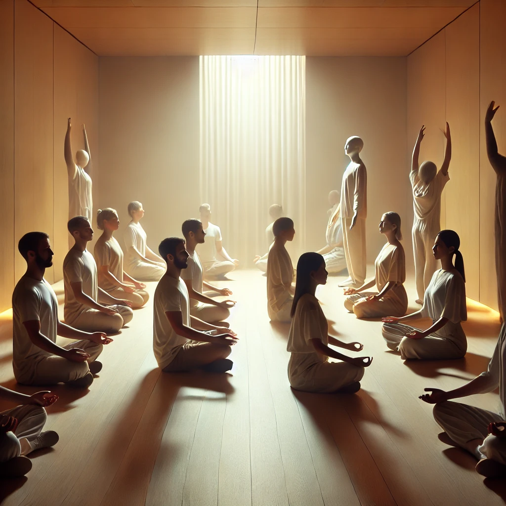

Méditation Dynamique
La méditation dynamique est une pratique unique développée par Osho qui combine mouvements physiques, travail respiratoire et libération émotionnelle. Cette technique est conçue pour aider les participants à se libérer des blocages mentaux, à évacuer le stress et à se connecter à leur énergie intérieure. Elle comprend des processus actifs et cathartiques qui se terminent par le calme et la conscience.
Pour pratiquer cette méditation : Téléchargez l'audio et écoutez-le tout en suivant les étapes ci-dessous.
1. Préparation
Trouvez un endroit calme et privé. Portez des vêtements confortables qui permettent une liberté de mouvement. Assurez-vous qu'il n'y a pas de distractions pendant la durée de la session.

2. Étape 1 : Respiration Chaotique (10 minutes)
Tenez-vous debout avec les bras levés, les yeux fermés, et respirez profondément et rapidement par le nez. Concentrez-vous sur la respiration chaotique, permettant à votre corps de s'énergiser.

3. Étape 2 : Catharsis (10 minutes)
Laissez-vous exprimer pleinement toutes les émotions que vous ressentez. Criez, riez, pleurez ou bougez. Cette phase consiste en une libération totale et un lâcher-prise de la tension émotionnelle.

4. Étape 3 : Sauter (10 minutes)
Les yeux fermés, sautez sur place en répétant le mantra « Hou ! Hou ! Hou ! ». Laissez le son résonner dans votre corps lorsque vous atterrissez sur la plante de vos pieds.

5. Étape 4 : Immobilisation (15 minutes)
Figez-vous soudainement dans votre position en plein saut. Gardez votre corps complètement immobile. Observez l'énergie circuler en vous tout en restant parfaitement immobile.
6. Étape 5 : Célébration (15 minutes)
Après l'immobilisation, commencez à danser avec liberté et joie. Laissez vos mouvements être l'expression de votre énergie, en célébrant la vie sans aucune restriction ou inhibition.